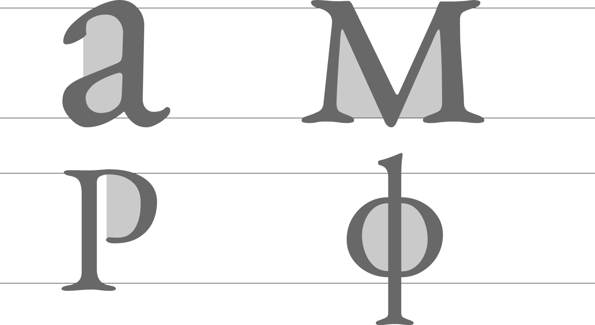

EB GARAMOND
«С помощью письма лучше всего
проникаешь в человека»
ЭБ Гарамонд - это реализация шрифта Garamond Клода Гарамонда
с открытым исходным кодом и соответствующими курсивными,
греческими и кириллическими символами, разработанная Робертом
Гранжоном. Его название является сокращением от Egenolff–
Berner Garamond, что относится к тому факту, что формы букв
взяты из образца Эгенольфа–Бернера, напечатанного в 1592 году.
Базовый набор символов (latin)

Скругленные углы и некоторая
округлость форм
Характерная форма капли,
сохраняющая форму следа от пера
Чуть изогнутые засечки с мягкими переходами
Незамкнутый полуовал
у буквы Р
Форма строчной Ф
с одним овалом
Необычное курсивное
начертание прописных
букв позволяет статье
стать изысканнее
без особой потери
читаемости, что дает
ей необычный шарм.
Плавные лигатуры
Имя Гарамона вошло в сотни шрифтовых каталогов, в миллионы компьютерных меню. Однако о самом Гарамоне до сих пор известно
очень мало. Мы знаем точно, что он родился
и умер в Париже. В источниках имеются
три предполагаемые даты его рождения
(1480, 1490, 1499) и дата смерти (1561).
Курсивное начертание шрифта выглядит
очень интересно. В особенности выделяется незамкнутая цифра 6, контрастная ширина
8 и акцентный конец у цифры 5. Остальные - выглядят очень элегантно и плавно благодаря постепенному расширению и сужению линии
в каждой цифре.